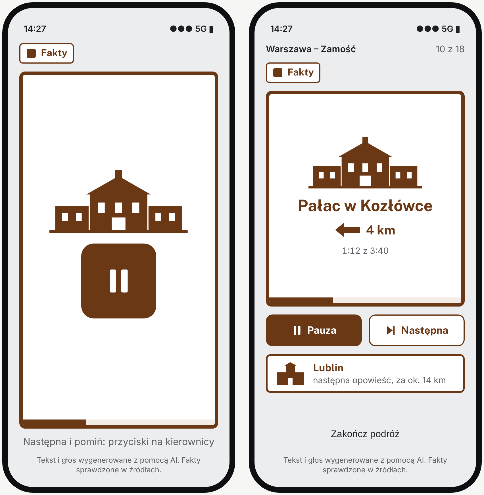
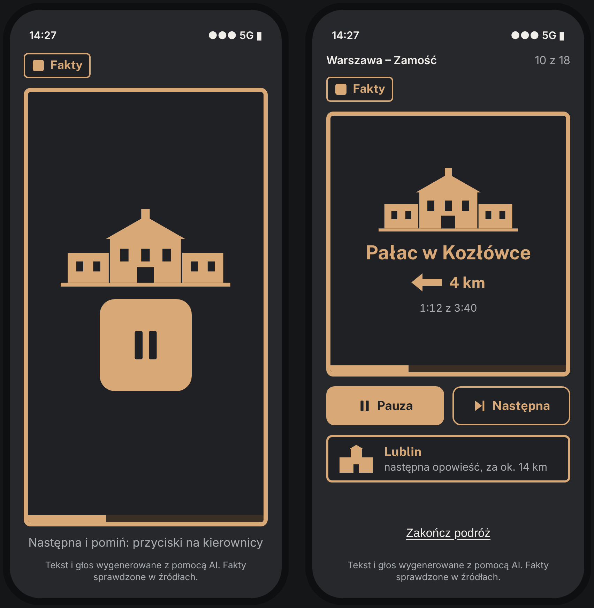
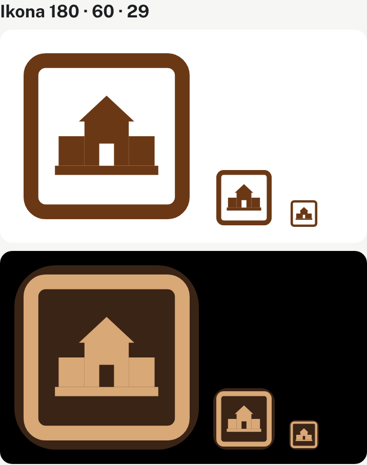
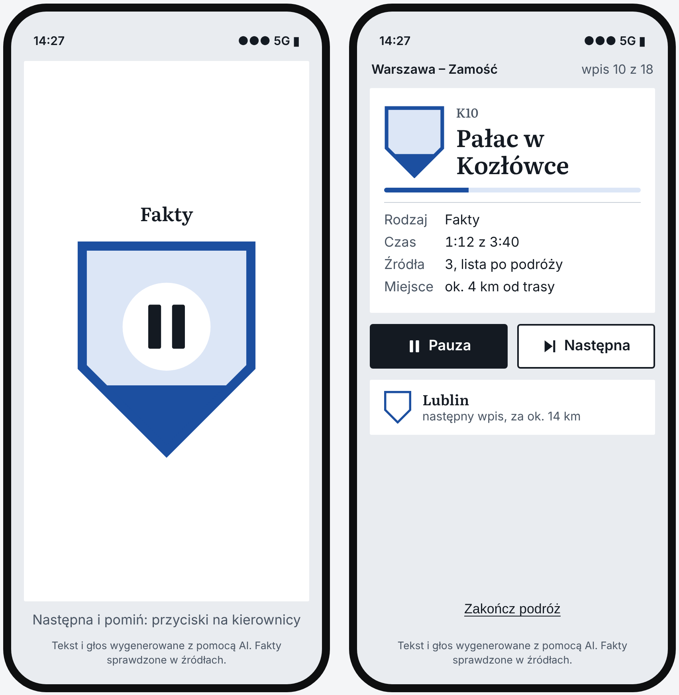
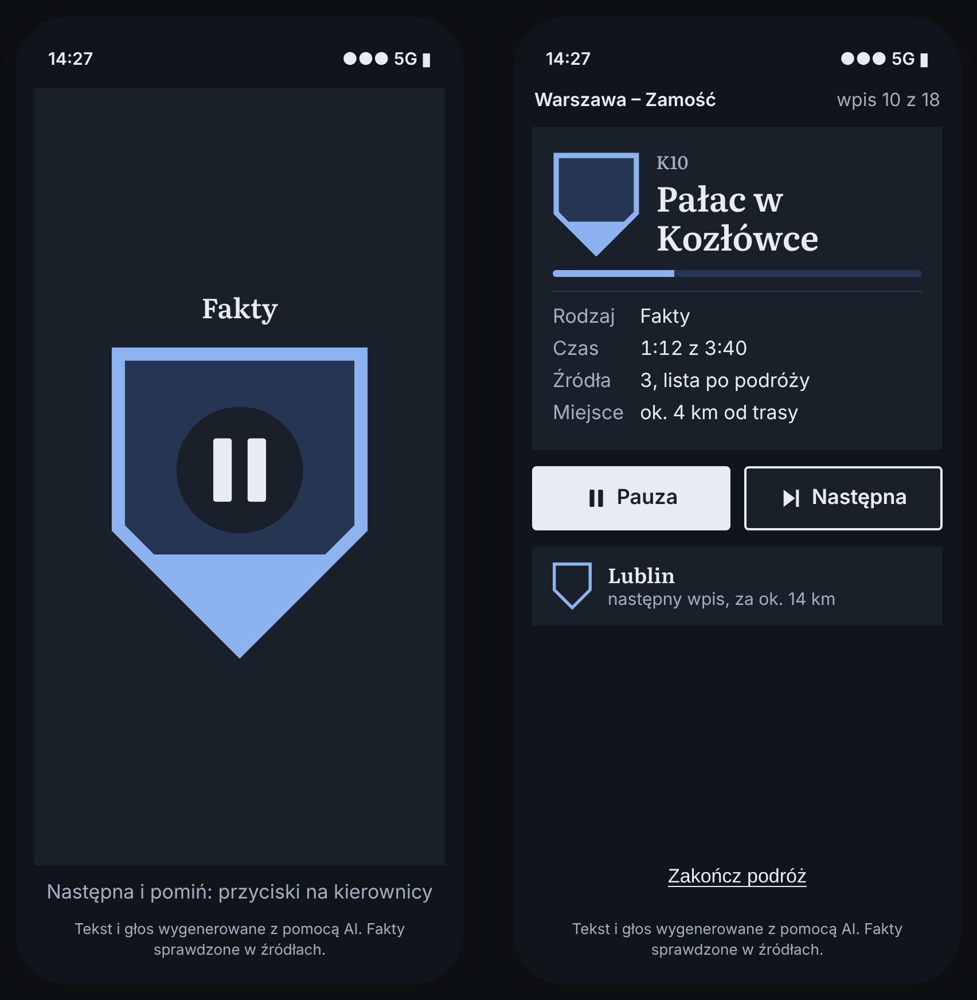
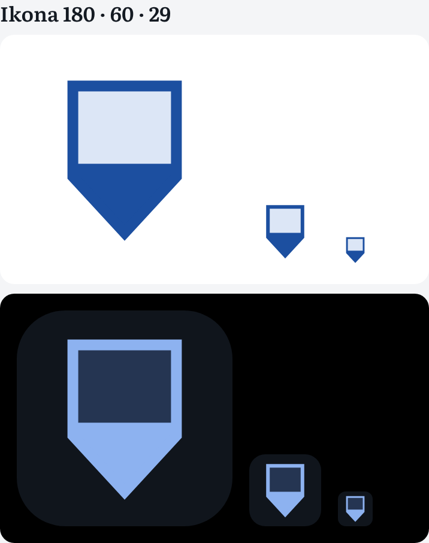
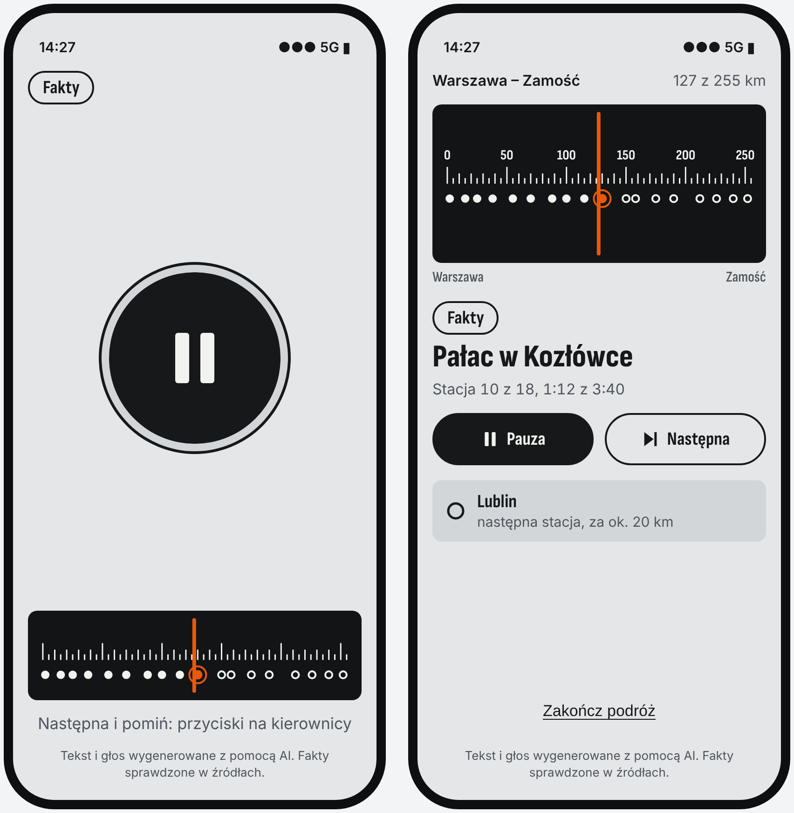
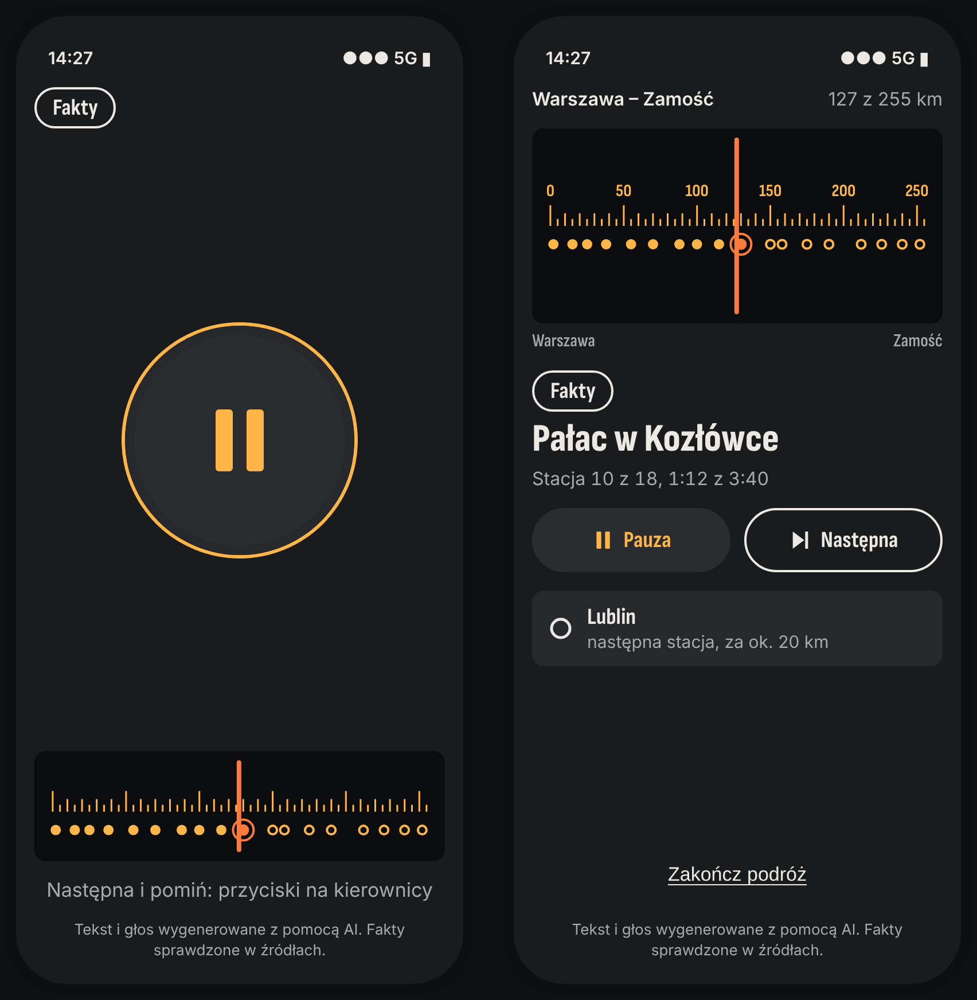
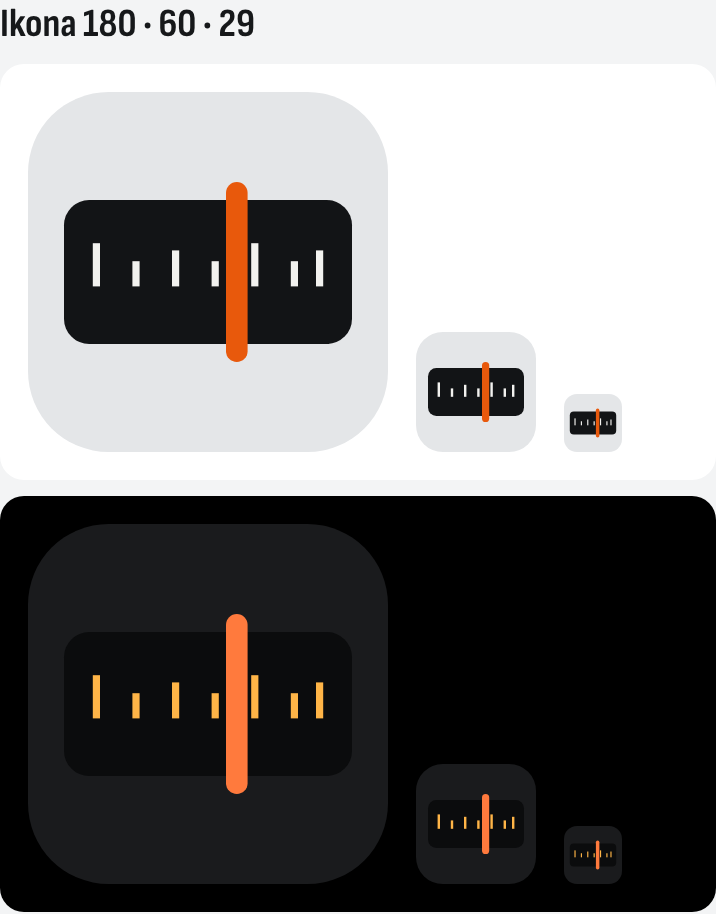

Trzy kierunki na tym samym ekranie
Ekran: sesja samochodowa w trakcie opowieści. Po lewej w każdej parze widok w ruchu (kierowca, spec. P4: najwyżej duży przycisk pauzy), po prawej widok na postoju lub dla pasażera. Treść próbna z trasy Warszawa – Zamość; fakty o miejscach niezweryfikowane.
A. Drogowskaz
Każda opowieść to brązowy drogowskaz turystyczny do miejsca, o którym słuchasz.



- Element firmowy
- Tablica: sylwetka typu obiektu, odległość i strona drogi, postęp na dolnym obrzeżu.
- Autorytet
- Brąz i siatka liter z Dz.U. 2019 poz. 2311 (tab. 1.3, pkt 1.4.1, 6.3.4.1, 6.3.13.2).
- Kierowca widzi
- Co to za miejsce (sylwetka) i ile zostało (pasek) bez czytania.
- Ryzyko
- Koszt sylwetek (typologia ok. 10–15 znaków zamiast rysunku każdego obiektu); naśladowanie znaku urzędowego [DO USTALENIA] prawnie.
B. Rejestr
Opowieść jako wpis w rejestrze miejsc, z widocznym pochodzeniem informacji.



- Element firmowy
- Tarczka: wypełnienie = rodzaj treści (Fakty / Legenda / Bajka, spec. P16) i postęp.
- Autorytet
- Biel i błękit znaku zabytku (Dz.U. 2004 nr 30 poz. 259); wartość błękitu [DO USTALENIA].
- Kierowca widzi
- Rodzaj treści i postęp.
- Ryzyko
- Niebieska tarcza czyta się jak aplikacja „bezpieczeństwa” albo VPN; błękit to klisza kategorii (6 z 13 aplikacji).
C. Pasmo
Trasa to pasmo radiowe, opowieści to stacje, auto to wskazówka.



- Element firmowy
- Skala: km trasy, stacje wysłuchane i przed nami, wskazówka = pozycja auta.
- Autorytet
- Brak; paleta z przedmiotu (radio samochodowe), decyzja studia.
- Kierowca widzi
- Gdzie jesteśmy na całej trasie (informacja, której kierowca nie potrzebuje w ruchu).
- Ryzyko
- Nocą „czarne + jeden jaskrawy akcent” z kalibracji; pokrewne linii z punktami (Organizer); kicz retro.
Rekomendacja: A. Drogowskaz
Powód funkcjonalny, nie gust: w ruchu kierowca ma zobaczyć jednym spojrzeniem „co gra”. Tylko w A element firmowy odpowiada na to bez tekstu (sylwetka typu obiektu), a barwa i proporcja liter pochodzą z przepisu, którego żadna z 13 sprawdzonych aplikacji nie używa. Biel z brązem ma najwyższy kontrast z trzech kierunków w obu motywach (9,5:1 i 7,5:1).
| A | B | C | |
|---|---|---|---|
| Odpowiada kierowcy „co gra” bez tekstu | tak (sylwetka) | częściowo (rodzaj treści) | nie (pozycja na trasie) |
| Źródło palety | przepis (szczebel 1) | przepis bez wartości barwy | brak |
| Kolizja z kliszą kategorii | brak | niebieski, tarcza | ciemne + akcent |
| Koszt wykonania | średni (typologia sylwetek) | niski | niski |
Możliwe połączenie: A + kod rodzaju treści z B (wypełnienie pełne / kreskowane / kontur w etykiecie „Fakty”), bo P16 wymaga tej etykiety w odtwarzaczu, a w A jest ona dziś tylko słowem.
Opcjonalnie: test pięciosekundowy z 5 kierowcami (ok. 1 h czasu właściciela): pokazać widok w ruchu na 5 s i zapytać „co teraz gra i co zrobisz, żeby zatrzymać?”. Wybór należy do właściciela i trafi dosłownie do docs/decyzje.md.